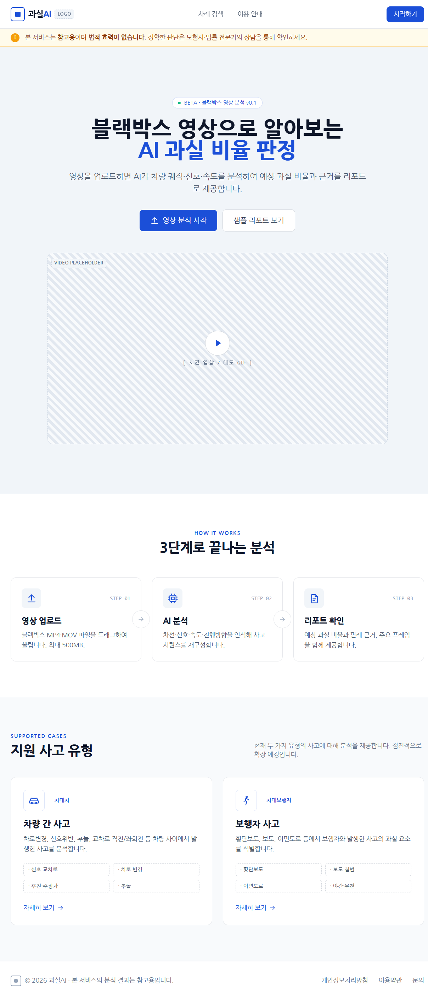
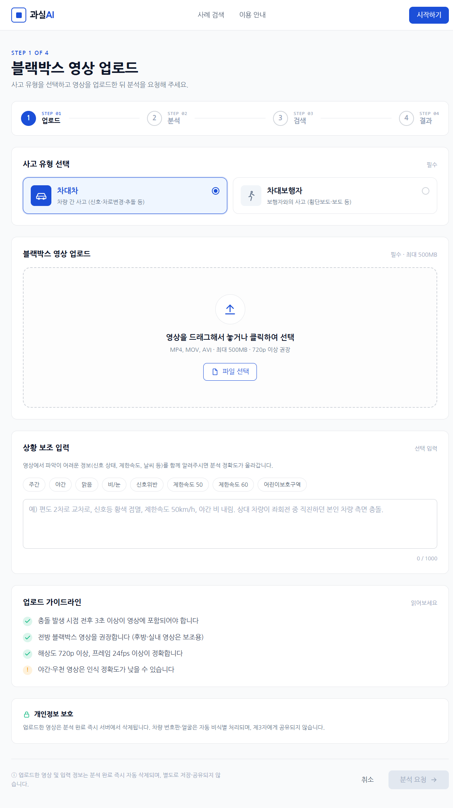
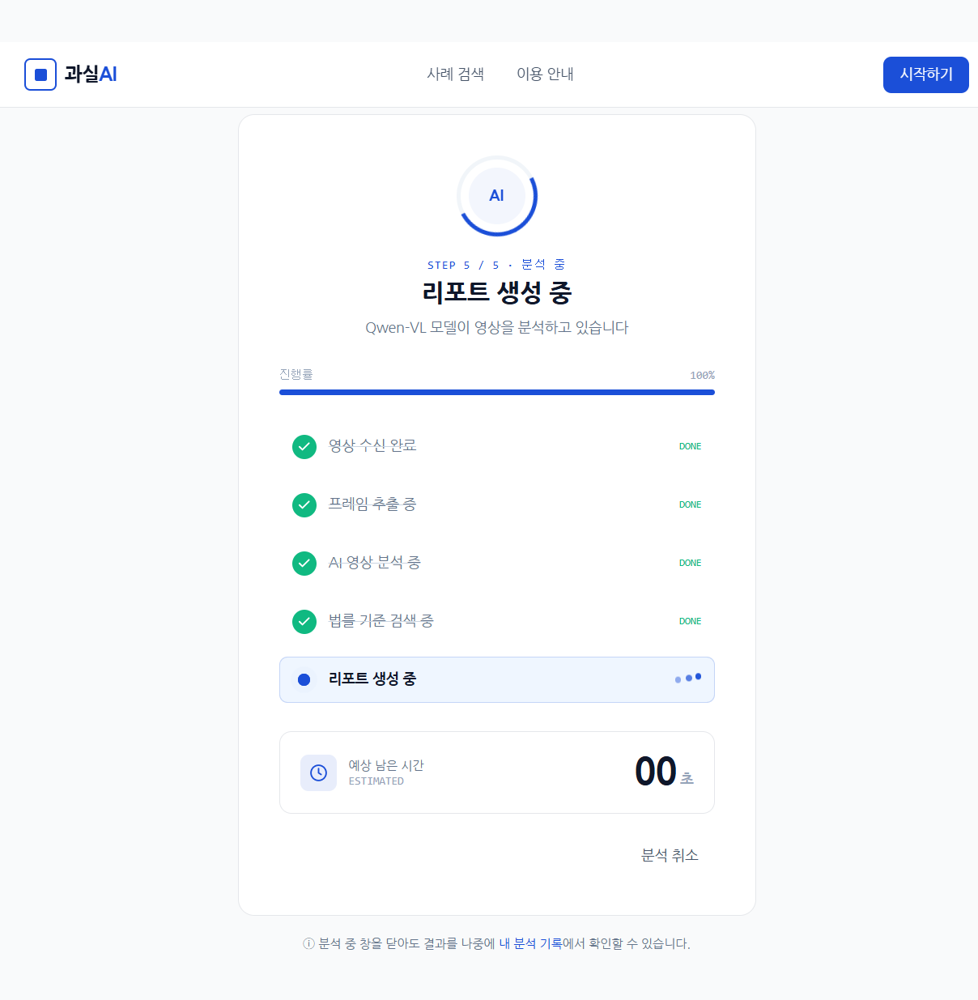
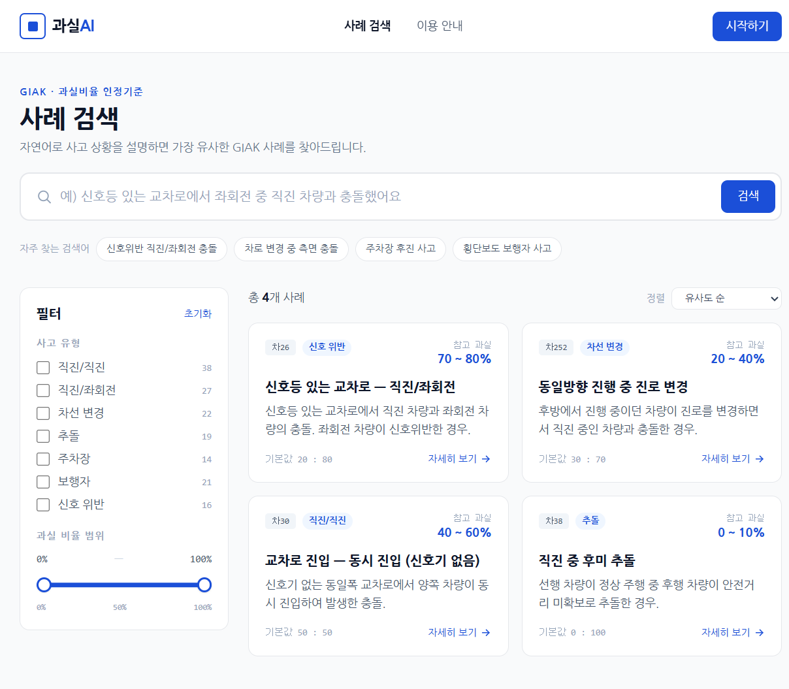
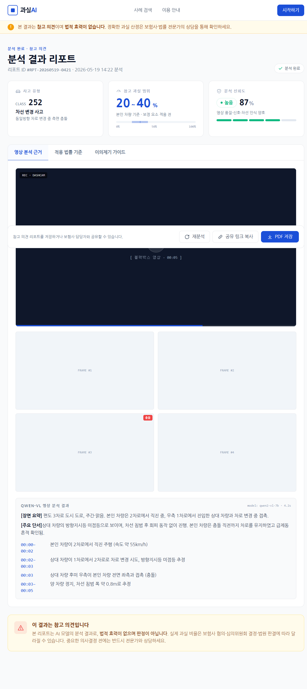

01 · OVERVIEW
프로젝트 개요
교통사고 발생 시 블랙박스 영상을 기반으로 AI가 과실비율 참고 의견을 제공하는 서비스입니다. 보험사 기준의 과실비율 기준서(PDF)를 RAG(Retrieval-Augmented Generation) 파이프라인으로 구축하여, AI가 정확한 기준 문서를 근거로 판단을 내릴 수 있도록 합니다.
사용자는 영상을 업로드하면 분석이 자동으로 진행되며, 결과 화면에서 과실 비율과 근거 조항을 확인할 수 있습니다. 현재 팀 개발이 진행 중이며, 각 파트별로 분담하여 작업 중입니다.
02 · MY ROLE
담당 역할
담당 · 문서 RAG 파이프라인
AI가 과실비율 기준서를 검색·참조할 수 있도록 PDF 문서를 벡터 DB에 인덱싱하는 전체 파이프라인을 담당하고 있습니다.
기준서에 포함된 표(table)는 일반 텍스트 추출로는 구조가 무너지는 문제가 있습니다. PDFPlumber로 표를 별도 파싱하여 Markdown 형태로 변환하고, BGE-M3 임베딩 모델로 벡터화 후 ChromaDB에 저장합니다.
PDF
(기준서)
→
(기준서)
PDFPlumber
표 파싱
→
표 파싱
텍스트 청킹
+ Markdown 변환
→
+ Markdown 변환
BGE-M3
임베딩
→
임베딩
ChromaDB
벡터 저장
→
벡터 저장
LLM
답변 생성
답변 생성
초록 노드 = 담당 영역
03 · SYSTEM
서비스 흐름
사용자의 영상 업로드부터 결과 반환까지의 전체 흐름입니다. 각 파트는 현재 개발 중이며, 인터페이스 설계(와이어프레임)가 선행되어 있습니다.
영상 업로드
→
사고 상황 분석
(Vision AI)
→
(Vision AI)
기준서 검색
(RAG)
→
(RAG)
과실비율 참고의견
생성
→
생성
결과 화면 표시
04 · DESIGN
화면 디자인 초안

랜딩 페이지
서비스 소개와 업로드 진입점을 제공하는 메인 화면 초안입니다.

영상 업로드
블랙박스 영상 파일을 업로드하는 화면 초안입니다.

분석 중
AI가 영상을 분석하는 동안 표시되는 로딩 화면 초안입니다.

기준서 검색 (RAG)
과실비율 기준서에서 관련 조항을 검색·조회하는 화면 초안입니다.

판정 결과
AI가 분석한 과실비율 참고 의견과 근거 조항을 보여주는 결과 화면 초안입니다.
이 페이지는 프로젝트 진행 중 작성되었습니다.
개발 완료 후 주요 기능 설명, 화면 스크린샷, 회고 등이 추가될 예정입니다.
개발 완료 후 주요 기능 설명, 화면 스크린샷, 회고 등이 추가될 예정입니다.